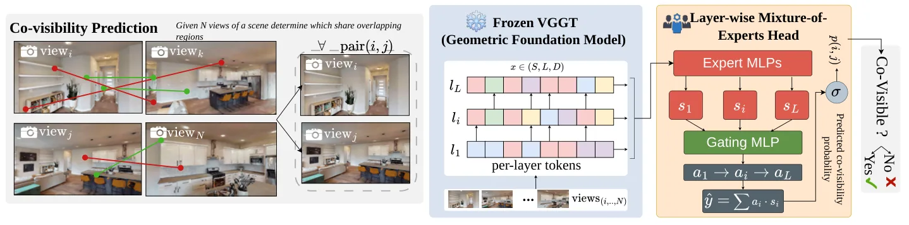
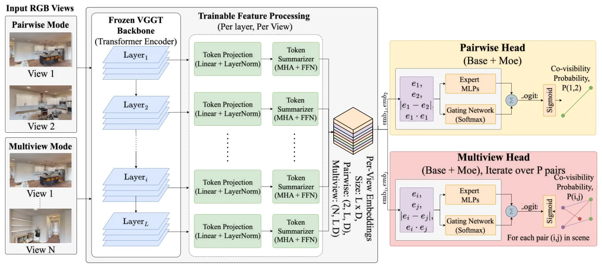
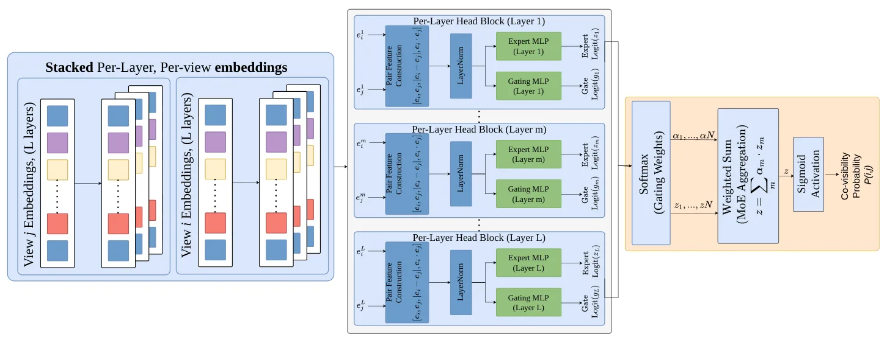

VGGT 对重叠关系了解多少：探测几何基础模型中的共视性What VGGT Knows About Overlap: Probing Geometric Foundation Models for Co-Visibility
共视筛选直接影响图像检索、回环候选和 SfM 图构建，尤其适合低重叠场景；贡献偏模型探测与前端筛选，实际大规模 SLAM 的时延、域外泛化和误边影响仍需验证。
一句话工作总结
探测 VGGT 的逐层共视能力，并用轻量 MoE 头输出经校准的共视概率，直接构造 SfM/SLAM 可见图。
摘要
本文分析 VGGT 是否隐式编码图像共视性。探测结果显示，早期层形成三维感知场景表示，后期层则呈现专门的共视推理能力，其中 L17 对不共视图像对表现为稳定的负锚点。基于这一发现，Co-VGGT 冻结 VGGT，仅训练不足 750 万参数的逐层 mixture-of-experts head，从 RGB 图像对判断共视关系。在 Co-VisiON 上，该模型超过人工标注基线和既有方法；其 pairwise 预测校准良好，可直接作为 visibility graph 的边权服务下游 SfM 与 SLAM。
A fundamental challenge in 3D reconstruction and robotic localization is co-visibility: determining which image pairs share overlapping visible surfaces, particularly in scenarios with minimal overlap. We demonstrate that VGGT implicitly encodes co-visibility as an emergent behavior: without any supervision for this task, its internal representations exhibit a clear hierarchical structure mirroring that of large language models, i.e. early layers build a 3D-aware scene representation, while late layers act as dedicated co-visibility reasoners. In particular, we identify layer L17 as a negative anchor that consistently routes non-co-visible pairs for this backbone, regardless of the evaluation setting, providing task-grounded evidence of layer specialization in a geometry-grounded foundation model. Building on this, we introduce Co-VGGT, which freezes VGGT and trains only a lightweight layer-wise mixture-of-experts head (less than 7.5M parameters) to classify co-visibility from RGB alone, treating each layer as a specialized expert whose geometric abstraction is adaptively weighted per input pair. On the Co-VisiON benchmark, Co-VGGT surpasses the human annotation baseline and improves over prior work by more than 25% pairwise and 10% multiview. Pairwise predictions are well-calibrated (ECE=0.030), enabling direct use as edge weights in visibility graphs for downstream SfM and SLAM pipelines without post-hoc correction. Code and data are available.
中文解读摘录
- 作者：Filippo Ziliotto, Luciano Serafini, Lamberto Ballan, Tommaso Campari
- 价值判断：揭示 VGGT 的层级共视推理能力，并用不足 750 万参数的 Co-VGGT MoE head 输出校准良好的共视概率，可直接作为 visibility graph 边权服务 SfM/SLAM。
- 亮点：在 Co-VisiON 上超过人工标注基线，pairwise ECE=0.030；低重叠图像对筛选对回环、图像检索和全局重建尤其重要。
- 后续核查：大规模图像集的二次配对成本、实时 SLAM 时延、跨域校准稳定性及错误边对后端优化的影响。
- 链接：arXiv · PDF
图表/页面预览
{kind=link}

{kind=link}

{kind=link}
